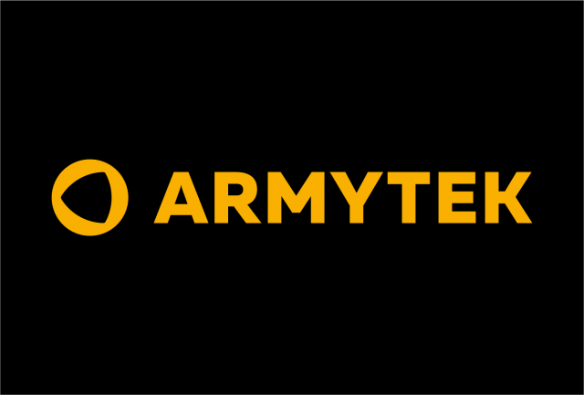

🔥 ДО −31%! СЕКРЕТНАЯ ЧЕРНАЯ ПЯТНИЦА В ARMYTEK! Откройте доступ к эксклюзивным условиям на сверхнадежные фонари и аксессуары Armytek. Как воспользоваться предложением: 1. Выберите интересующие…

MITEX 2026 · Россия · Стенд 6А703
Карточка проверена 10 ноября 2026, 09:25 · Источник ↗ · Снимок оригинальной карточки ↗
Armytek — это всемирно известный бренд с более чем 17-летним опытом разработки и производства высокотехнологичных фонарей, автофар, зарядных устройств и аксессуаров. Производственные мощности Armytek включают современные сборочные линии и лабораторные помещения, первоклассное оборудование, сверхнадежные материалы, особую систему контроля качества. Все этапы производства курируются и контролируются командой первоклассных сертифицированных специалистов. Высокоточное оборудование и система тщательного контроля качества на всех этапах производства, многочисленные тестирования конечного продукта на стендах в лабораторных условиях и в условиях многолетнего реального применения позволяют достичь максимального уровня надежности и предоставить гарантию на свою продукцию до 10 лет — одну из самых длительных в отрасли. В отличие от многих моделей, представленных на рынке, фонари Armytek не просто защищены от дождя и влажности. Они соответствуют международному стандарту герметичности IP68 и продолжают работать после погружения на глубину до 25 метров. Воздействие грязи и пыли не влияет на качество работы фонаря, а специальное матовое анодирование исключает возникновение коррозии. Корпус из авиационного алюминия выдерживает значительные механические воздействия и падение с высоты до 25 метров. Мощные фонари функционируют при температурных условиях от -40 °C до +40 °C. С момента начала своей работы компания Armytek приняла участие в более чем 200 профильных выставках, разработала и воплотила многочисленные заказы для наших корпоративных клиентов.
Контакты Юридический адрес Телефон: 8-495-109-70-55 E-mail: opt@armytek.ru Адрес: 129085, Россия, Москва, пр-кт Мира, д. 95, стр. 1, помещ. 6 Веб-сайт: https://armytek.ru/ E-mail: opt@armytek.ru Телефон: 8-495-109-70-55

В доступной карточке нет видео или документов. Смотрите сайт участника.
До десяти последних сообщений каждого найденного канала. Оригинал открывается по ссылке.
🔥 ДО −31%! СЕКРЕТНАЯ ЧЕРНАЯ ПЯТНИЦА В ARMYTEK! Откройте доступ к эксклюзивным условиям на сверхнадежные фонари и аксессуары Armytek. Как воспользоваться предложением: 1. Выберите интересующие…

❗ 11.11 СЕКРЕТНАЯ ЧЕРНАЯ ПЯТНИЦА В ARMYTEK ❗ Друзья, кое-что особенное на подходе! Уже 11 ноября вас ждут специальные условия на легендарные фонари и аксессуары…
Медиа-публикация. Подробности — в оригинале.
Медиа-публикация. Подробности — в оригинале.
Медиа-публикация. Подробности — в оригинале.
🌙 ПОСЛЕДНИЕ ЧАСЫ НОЧИ WIZARD! Используйте шанс и заберите любую версию Wizard C2 Pro или Wizard C2 Pro Max по специальной цене. Просто примените промокод…

🌒 НОЧЬ WIZARD! Время сделать октябрь ярче! Легендарные фонари Wizard стали еще ближе — примените промокод ❗️ ТЕНЬ ❗️ и заберите свой мультифонарь с максимальной…
🌠 ВРЕМЯ ДЛЯ ЛЕГЕНД! Одно из самых ярких событий года в Armytek уже на пороге. В последние ночи октября вас ждет особое предложение на легендарную…
Медиа-публикация. Подробности — в оригинале.
Elf C2 Max — свет, на который можно положиться! 🔥 1. Мощный широкий свет ⚪️ До 4500 лм и 150 м — флагманская яркость серии…